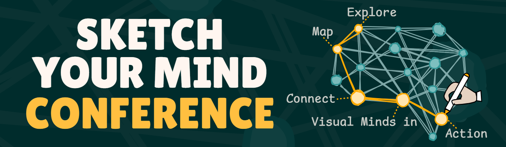
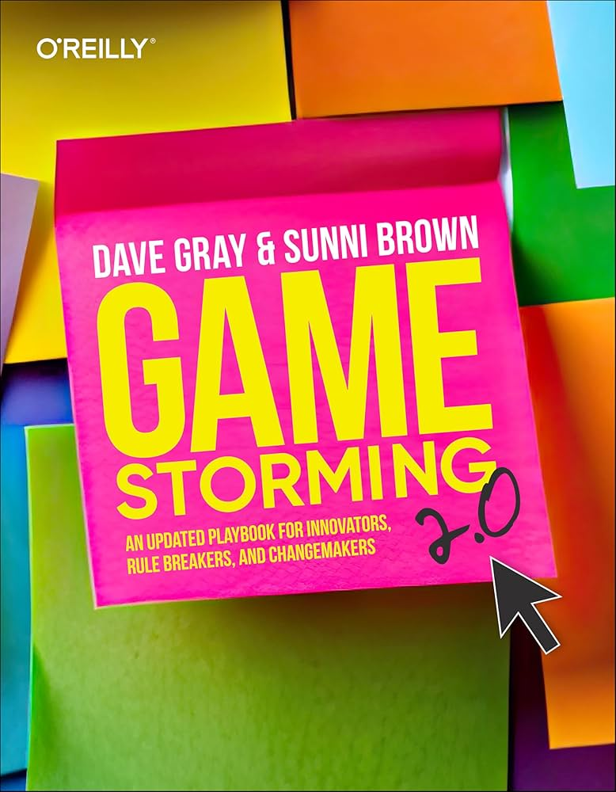

Gamestorming 2
Playful visual frameworks to navigate uncertainty and align faster.
Abstract
Building on lessons from years of practice, Gamestorming 2 refines a
toolkit of visual frameworks and facilitation moves to help teams explore
ambiguity, make sense together, and move from questions to decisions.
We will examine how play creates safety for serious work, how to shape
constraints to spark insight, and how to flow between divergence and
convergence for clear outcomes.

Speaker Bio
Dave Gray
Dave Gray describes himself as a possibilitarian. He helps people and teams realize their creative potential through visual thinking, design, and facilitation. He founded XPLANE, a pioneering visual thinking company, and is the author of several influential books, including Gamestorming (with Sunni Brown), The Connected Company, and Liminal Thinking. After selling XPLANE in 2022, he turned his focus to big life questions—how to make a living while creating a life—through Visual Frameworks and his School of the Possible.
← Back to schedule